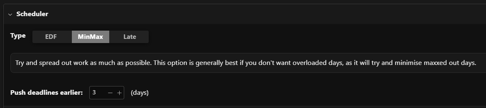
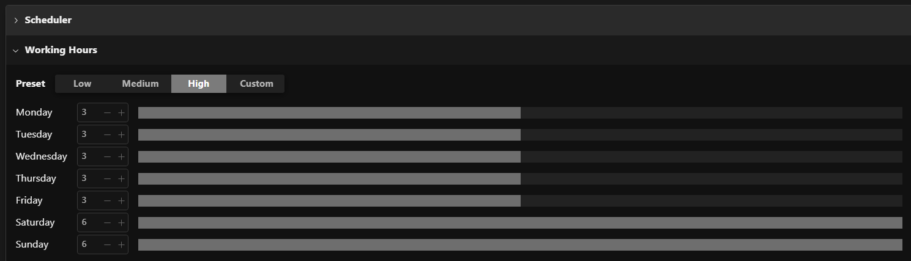
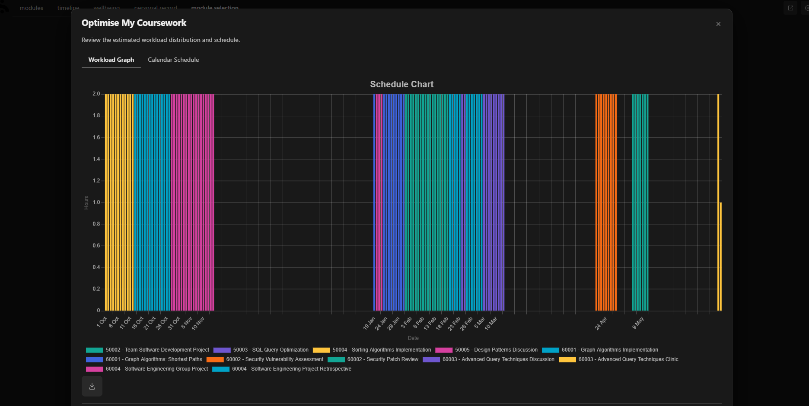
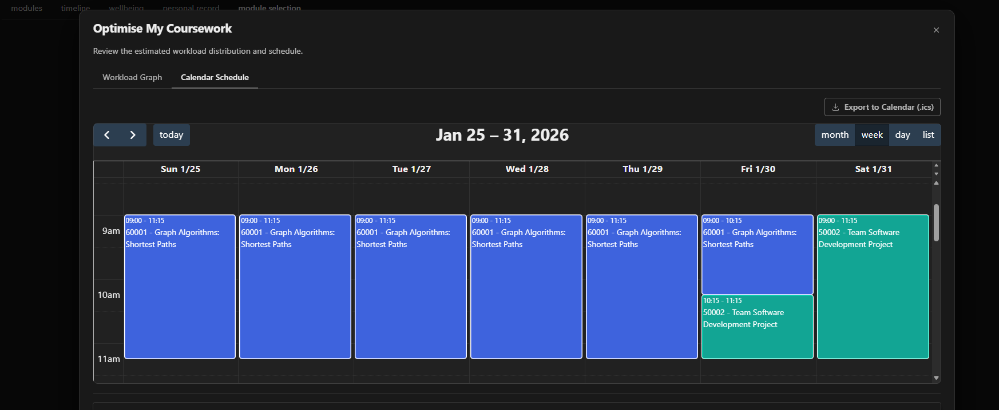

Overview
Optimise My Coursework is a full-stack scheduling tool designed to help students plan coursework more realistically across the academic term. Instead of only seeing assignment deadlines, users can generate an optimised schedule based on their preferred working pattern, scheduling strategy, and personal buffer preferences.
Main idea: break large coursework tasks into a practical day-by-day plan, then present the result in both visual and calendar-based formats that students can immediately act on.
The Problem
Students often know what they need to complete, but not how to distribute that workload effectively over time. Coursework deadlines tend to cluster, and without structure, it is easy to leave work too late or create unsustainable spikes in effort. We wanted to build a system that turns deadline data into a realistic, personalised study schedule.
Core Functionality
Scheduling Strategy Selection
Users can choose between different scheduling approaches such as Earliest Deadline First, MinMax for balancing daily load, or a Late scheduler depending on how they prefer to organise their work.
Working Hours Configuration
Students can define their available working window, allowing the generated schedule to reflect realistic daily study capacity rather than assuming unlimited time.
Buffer-Based Deadline Protection
A custom buffer feature lets users artificially bring deadlines forward by several days, creating a safety margin and reducing the risk of last-minute completion.
Dual Visualisation Output
The generated schedule is displayed through both a workload chart and an interactive calendar view, helping students understand their plan at both a high level and a day-by-day level.
How It Works
The platform is powered by a FastAPI backend and a React frontend. The API accepts two major inputs: a coursework array containing task information such as start date, deadline, and expected completion time, and a config object that stores optional user preferences such as strategy, working hours, and buffer.
Whenever a user changes these settings in the interface, the frontend dynamically updates the JSON payload sent to the backend. The backend then computes an optimised ScheduleResult, which is rendered immediately in the UI.
Example: if the user changes the buffer from 0 to 2, the system recalculates a plan that finishes two days earlier than the actual deadline.
Technical Highlights
Responsive Workload Visualisation
We used Chart.js to render the workload chart as a stacked bar chart. To improve presentation quality across devices, we also implemented a custom mathematical hook that dynamically adjusts the chart aspect ratio, preventing awkward stretching on different screen sizes.
Customised Calendar Experience
For the calendar interface, we integrated @fullcalendar/react and extended it with custom behaviour. The generated schedule is transformed into calendar events, and event hover states display custom HTML tooltips showing exact task durations.
Mobile-Responsive UX
Using custom React hooks for mobile detection, the calendar automatically adapts to smaller screens by hiding heavier desktop views and defaulting to touch-friendly day or list layouts.
Calendar Export
We also implemented an export feature that converts the generated schedule into a standards-compliant .ics file, allowing students to import their optimised schedule directly into Outlook or Google Calendar.
Live Demo
A public demonstration build is available for interactive exploration. Visitors can test the scheduling interface directly and also inspect the API documentation that powers the system.
Public demo: scientia.decesare.dev
- Username: hpotter
- Password: any string
Tip: try changing the scheduling strategy, working hours, or buffer value, then compare how the workload graph and calendar output update.
Impact
This project turns abstract deadline information into a personalised and actionable study plan. By combining configurable scheduling logic with intuitive visual outputs, it helps students manage coursework more proactively, reduce deadline pressure, and integrate academic planning with their wider personal schedule.
Tech Stack
Screenshots
These screenshots show the main interaction points and outputs of the platform.

Scheduler Choice
Users can choose from multiple scheduling strategies, allowing the system to adapt to different workload preferences and study habits.

Working Hours & Buffer Setup
The configuration panel allows students to define realistic working hours and add a safety buffer that brings deadlines forward.

Workload Graph
Built using Chart.js, the stacked bar chart transforms raw schedule data into an immediate overview of required effort across the term.

Calendar View
The interactive calendar converts the schedule output into readable events, helping students inspect workload at the daily level.